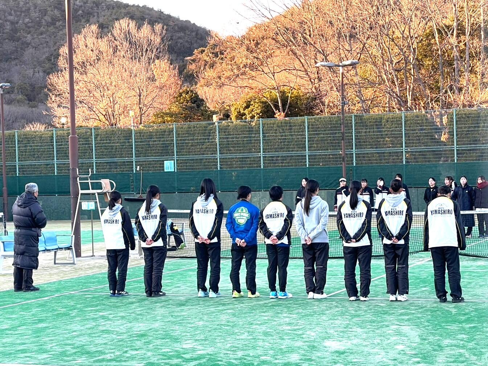
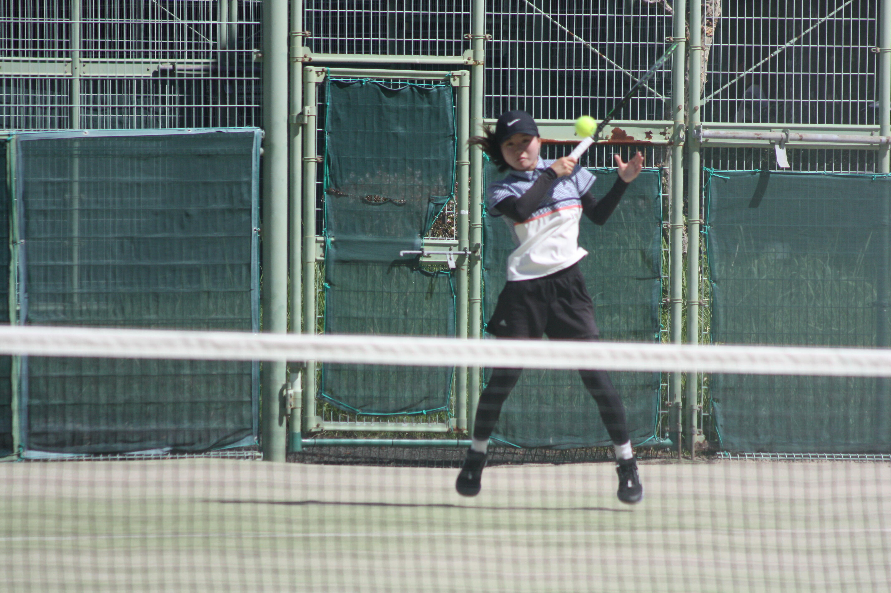
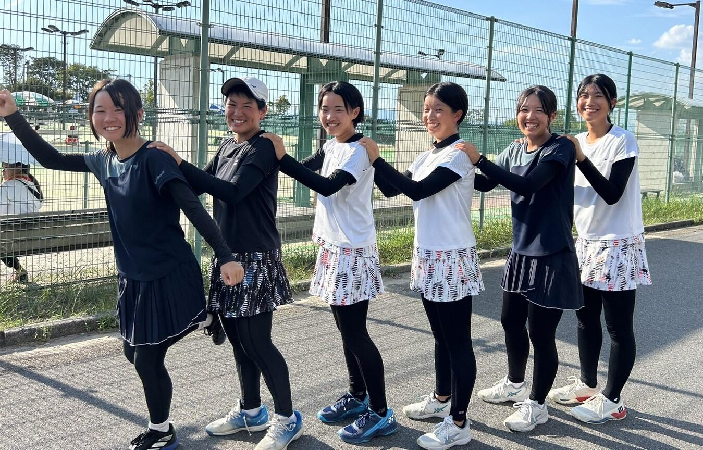
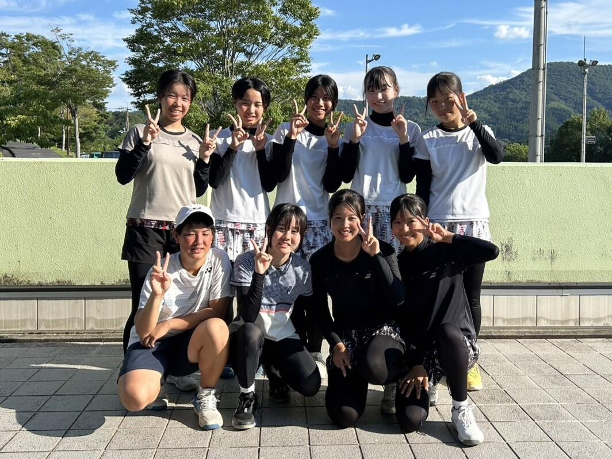
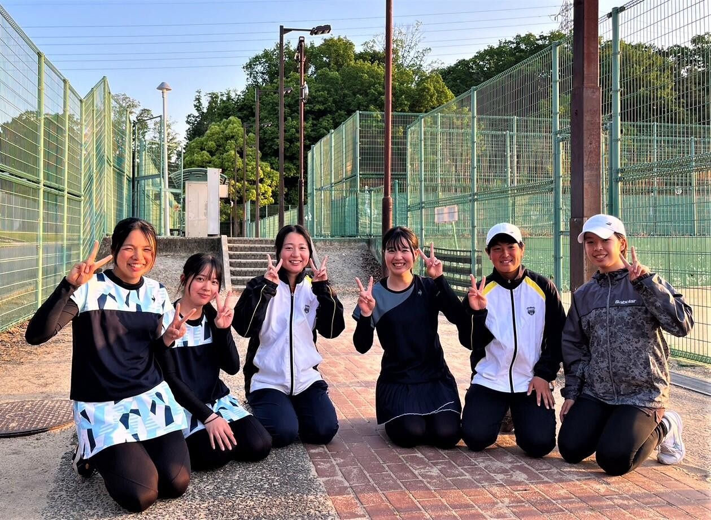
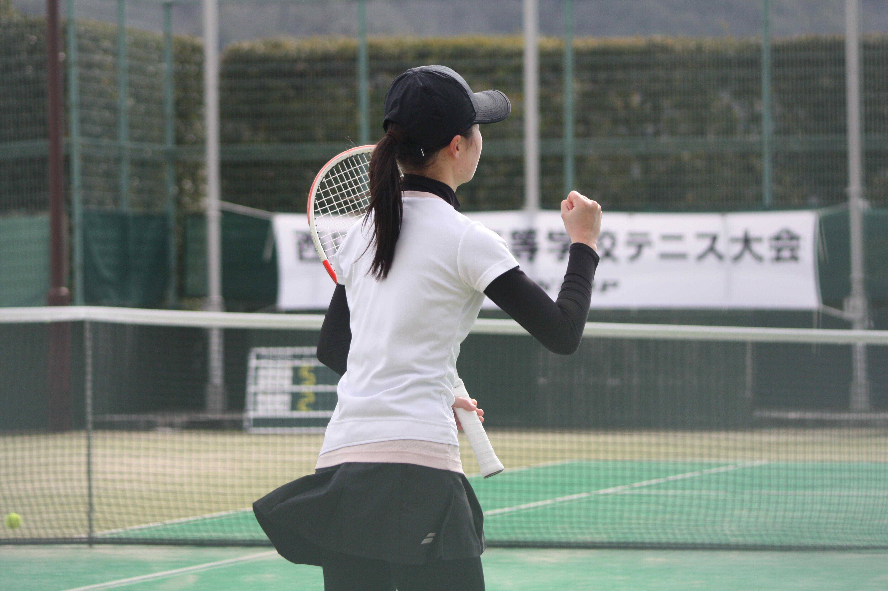
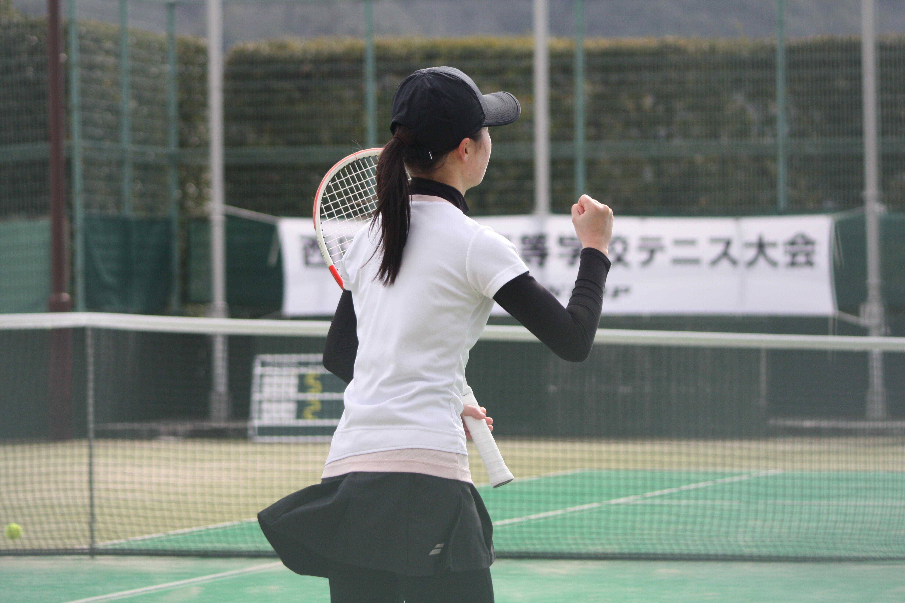

- ＨＯＭＥ
- >
- 部活動
- >
- 女子テニス
- >
- 女子テニス部ＴＯＰＩＣＳ
女子テニス部 三冠達成
◎令和７年２月８日(土)、
岡山県・備前テニスセンターで開催された、
第２回西日本公立高等学校テニス大会に、
２年連続で近畿地区の代表として出場し、
優勝しました。
これで、京都府大会、近畿大会、西日本大会の
三冠を達成しました。
最強寒波でコートが凍り付き、積雪もある中、
コート整備に尽力してくださった大会役員の皆様、
岡山県各校テニス部の顧問の皆様、部員の皆様、
大変お世話になりました。
○対戦結果 ２Ｒ 山城 ４１ 岡山城東
準決勝 山城 ３２ 加古川北
決勝 山城 ４１ 松江東


 


◎近畿公立高等学校テニス大会個人の部 ６名出場

令和７年２月１日(土)、
大阪市、マリンテニスパーク北村で開催された、
2024年度第13回近畿公立高等学校テニス大会個人の部に、
本校から、過去最多の６名が出場しました。
前日夜、桜宮高校で練習させていただき、
温泉で英気を養って戦いに臨みました。
○戦績 １Ｒ 田口 友菜(１年) ３６ 大阪･八尾(２年)
常塚 侑花(１年) ６２ 大阪･八尾(２年)
２Ｒ 田中 心(２年) ５７ 兵庫･三木北(２年)
常塚 侑花(１年) ４６ 兵庫･宝塚西(２年)
内海 紗希(２年) ６１ 滋賀･国際情報(１年)
夜久かのん(２年) ６１ 大阪･山田(２年)
松岡 明里(１年) ６４ 兵庫･伊丹西(１年)
３Ｒ 内海 紗希(２年) ３６ 奈良･高取国際(１年).........ベスト16
夜久かのん(２年) ６２ 滋賀･膳所(２年)
松岡 明里(１年) ７５ 兵庫･三田祥雲館(２年)
準々決勝 夜久かのん(２年) ２６ 兵庫･兵庫(１年)...............ベスト８
松岡 明里(１年) ５７ 兵庫･神戸鈴蘭台(１年)......ベスト８
ｺﾝｿﾚｰｼｮﾝ 田口 友菜(１年) ２６ 和歌山･和歌山商業(２年)
常塚 侑花(１年) ６３ 和歌山･和歌山商業(２年)
田中 心(２年) ６３ 大阪･八尾(２年)


女子テニス部 近畿公立高等学校テニス大会 優勝
◎令和７年１月６日(月) 和歌山市つつじが丘テニスコートで開催された、
令和６年度第22回近畿公立高等学校テニス大会団体の部において、
初優勝を遂げました。
京都府として初めて、
山城高校１５回目の挑戦にしてようやく悲願を達成しました。
ここまで女子テニス部を築き上げて来てくださった歴代の先輩方、
保護者の皆様、練習試合をしてくださった各校テニス部の皆様、
ご支援、ご協力、ありがとうございました。
この結果により、２月に岡山県で開催される、
第２回西日本公立高等学校大会でも、
優勝を目指して頑張ります。
・対戦結果 予選１Ｒ 山城 ４１ 三田祥雲館(兵庫)
予選２Ｒ 山城 ３０ 国際情報(滋賀)
決勝１Ｒ 山城 ３１ 東大津(滋賀)
準決勝 山城 ３０ 加古川北(兵庫)
決勝 山城 ３１ 兵庫(兵庫)
・団体メンバー(登録順)
内海 紗希(２年) 常塚 侑花(１年) 松岡 明里(１年)
夜久かのん(２年) 田中 心(２年) 山中陽菜乃(１年)
福田 皐(２年) 増田 陽香(２年) 水津 渚(２年)


◎京都招待テニス大会 出場
令和６年12月21日(土)･22日(日)に、
宇治市 山城総合運動公園テニスコートで開催された、
令和６年度京都招待テニス選手権大会(団体の部･個人の部)に、
京都府の代表として出場しました。
残念ながら入賞は果たせませんでしたが、
貴重な経験となりました。
・対戦結果(団体の部)
１Ｒ 山城 １２ 雲雀丘学園(兵庫)
ｺﾝｿﾚｰｼｮﾝ 山城 ２１ 大阪女学院(大阪)
山城 ２１ 京都橘(京都)
・対戦結果(個人の部シングルス)
１Ｒ 田中 心(２年) ２６ 啓明学院(１年･兵庫)
常塚 侑花(１年) ２６ 近大和歌山(２年･和歌山)
ｺﾝｿﾚｰｼｮﾝ 田中 心(２年) ２４ 膳所(２年･滋賀)
常塚 侑花(１年) １４ 奈良学園(１年･奈良)
・対戦結果(個人の部ダブルス)
１Ｒ 内海(２年)松岡(１年) ７６(1) 近大和歌山(2.1年･和歌山)
２Ｒ 内海(２年)松岡(１年) ４６ 大阪女学院(2.1年･大阪)
ｺﾝｿﾚｰｼｮﾝ 内海(２年)松岡(１年) ４１ 啓明学院(2.2年･兵庫)
◎冬期合宿(12月７～８日 １泊２日 和歌山市つつじが丘テニスコート)
例年通り、冬期の遠征･合宿を実施し、和歌山県の公立･私立の高校と
練習試合を行いました。
７日 対戦校：桐蔭・和歌山商業・田辺・海南
８日 対戦校：近大和歌山
各校顧問の先生方、選手・会場の手配から試合の運営まで、
大変お世話になりました。ありがとうございました。


◎その他の活動
・令和７年１月３日(金) 初打ち・初詣
新年初打ちの後、例年の行事として、学校の近くの、
大将軍八神社に参詣し、優勝を祈願しました。
(部員の行いが良かったのか、願いは聞き入れて頂きました。)
・令和６年12月26日(木) 練習試合(団体戦形式)
対戦校：京都橘・中京大中京・桑名西・国際情報・立命館宇治

・令和６年12月15日(日) 練習試合
対戦校：桜宮高等学校
女子テニス部 京都府公立高等学校テニス選手権大会 １２連覇
◎11月９日(土)、堀川高校で開催された、
第25回京都府公立高等学校テニス選手権大会
女子団体の部において、
12年連続、14回目の優勝を果たしました。
対戦結果 準決勝 山城 ３０(打切) 南陽
決勝 山城 ３０(打切) 堀川
団体メンバー(登録順)
内海 紗希(２年) 常塚 侑花(１年) 松岡 明里(１年)
夜久かのん(２年) 田中 心(２年) 山中陽菜乃(１年)
福田 皐(２年) 増田 陽香(２年) 水津 渚(２年)
この結果により、
令和７年１月５日(日)６日(月)に、和歌山県で開催される、
第22回近畿公立高等学校テニス大会団体の部への出場が決まりました。
当大会への出場は15回連続となります。
悲願の近畿優勝を目指して、さらに努力を重ねます。
いつも支えてくださる保護者の皆様、
練習試合をしてくださった各校テニス部の皆様、
ありがとうございました。

◎京都府公立高等学校テニス選手権大会個人の部 表彰台制覇
10月27日(日)に、太陽が丘テニスコートで開催された、
第９回京都府公立高等学校テニス選手権大会個人の部において、
優勝・準優勝・第３位を完全制覇しました。
結果 優勝 松岡 明里(１年)
準優勝 夜久かのん(２年)
第３位 田中 心(２年)
第３位 内海 紗希(２年)
この結果による松岡、夜久、田中の３名と、
京都府高体連テニス部の年間ポイントの上位者、
内海、常塚侑花(１年)、田口友菜(１年)の計６名が、
令和７年２月１日(土)に大阪市で開催される、
第13回近畿公立高等学校テニス大会個人の部への出場が決まりました。
◎京都府高等学校テニス選手権大会 結果
10月13日(日)から27日(日)にかけて開催された、
令和６年度第44回京都府高等学校テニス選手権大会において、
以下の選手が本戦での成績を挙げました。
女子シングルス
１Ｒ 内海 紗希(２年) ６０ 同志社(１年)
夜久かのん(２年) 76(5) 洛南(１年)
松岡 明里(１年) ６２ 同志社国際(２年)
田中 心(２年) ０６ 京都両洋(１年)
常塚 侑花(１年) ４６ 立命館宇治(２年)
２Ｒ 内海 紗希(２年) ３６ 京都橘(１年)
夜久かのん(２年) ２６ 京都両洋(１年)
松岡 明里(１年) １６ 京都外大西(２年)
女子ダブルス
１Ｒ 夜久･常塚(２･１年) ６１ 山城(２･１年)
田中･山中(２･１年) １６ 山城(２･１年)
内海･松岡(２･１年) ４６ 京都両洋(２･２年)
２Ｒ 夜久･常塚(２･１年) １６ 京都外大西(１･１年)
◎その他 練習試合
11月17日 同志社女子(同高)
11月10日 東大津・国際情報(大石スポーツ村)
10月20日 東大津(大石スポーツ村)
10月20日 立命館宇治(同高)
女子テニス部 全国選抜高校テニス大会京都府大会 ベスト４
○全国選抜高校テニス大会京都府大会 ベスト４
９月22日から28日にかけて
HOS向島及び丹波自然公園で開催された、
令和６年度全国選抜高校テニス大会京都府大会
女子団体戦において、
ベスト４の成績を収めました。
この結果により、12月21日･22日に、
近畿の強豪校を集めて京都で開催される、
京都招待テニス選手権大会(団体･個人)に、
京都府の代表としての出場が決まりました。
団体メンバーは以下の通り(登録順)です。
内海 紗希(２年) 常塚 侑花(１年) 松岡 明里(１年)
夜久 かのん(２年) 田中 心(２年) 田口 友菜(１年)
山中 陽菜乃(１年) 福田 皐(２年) 増田 陽香(２年)
・対戦結果 ２Ｒ 山城 ３０(打切) 北稜
３Ｒ 山城 ３０(打切) 城南菱創
４Ｒ 山城 ３０(打切) 京都橘
準決勝 山城 ０３(打切) 京都両洋
順位戦 山城 ０３(打切) 同志社国際
○近畿高等学校テニス大会 出場
９月14日(土)に、神戸総合運動公園で開催された、
令和６年度近畿高等学校テニス大会女子シングルスに、
内海 紗希(２年)が出場し、
初戦を突破して２Ｒに進出しました。
・対戦結果
１Ｒ 内海 紗希(２年) ６０ 和歌山信愛高(２年)
２Ｒ 内海 紗希(２年) １６ 京都両洋高(２年)

○近畿高等学校テニス大会京都府予選
８月18日から８月24日にかけて開催された、
令和６年度近畿高等学校テニス大会京都府予選において、
部員それぞれが夏休みの練習の成果を発揮しました。
中でも、内海 紗希(２年)が
女子シングルスでベスト１６に入り、
２年連続で近畿高等学校テニス大会への
出場権を獲得しました。
・本戦結果(女子シングルス)
１Ｒ 内海 紗希(２年) ６０ 同志社国際高(２年)
常塚 侑花(１年) ６３ 京都女子高(２年)
松岡 明里(１年) ７５ 京都両洋高(１年)
夜久かのん(２年) １６ 京都両洋高(１年)
田中 心(２年) ５７ 京都外大西高(１年)
田口 友菜(１年) ０６ 京都両洋高(１年)
２Ｒ 内海 紗希(２年) ７５ 京都外大西高(１年)
常塚 侑花(１年) ３６ 京都両洋高(１年)
松岡 明里(１年) ０６ 京都外大西高(１年)
３Ｒ 内海 紗希(２年) １６ 京都外大西高(１年)
順位戦 常塚 侑花(１年) １６ 同志社国際高(１年)
松岡 明里(１年) ４６ 京都外大西高(１年)
・本戦結果(女子ダブルス)
１Ｒ 内海(２年)夜久(２年) ４６ 京都外大西高(1.2年)
田中(２年)松岡(１年) ２６ 京都両洋高(1.1年)
常塚(１年)山中(１年) １６ 京都両洋高(1.1年)

○夏期合同合宿
８月７日(水)から10日(土)までの３泊４日で、
競技力の向上と、チーム力の育成を兼ねて、
福知山･大江山グリーンロッジで、
夏期合同合宿を行いました。
今年は、本校と、城南菱創、洛北、久御山
光泉カトリック、京都共栄学園の
合計６校の選手が集まり、
総勢５４名の大規模合宿になりました。
○京都府公立高等学校テニス選手権大会
７月31日に丹波自然公園で開催された、
令和６年度京都府公立高等学校テニス選手権大会
女子団体の部において１次予選を勝ち上がり、
11月に行われる２次予選への出場が決まりました。
また８月１日に同公園で開催された、
同大会個人の部において、
内海 紗希(２年) 夜久 かのん(２年)
松岡 明里(１年) 田中 心(２年)の４名の、
10月に行われる２次予選への出場が決まりました。

○京都サマージュニアテニス選手権大会
７月22日から29日にかけて、
2024京都サマージュニアテニス選手権大会に、
全員が出場しました。
高校からテニスを始めた者にとっては、
初めての公式戦でした。
・本戦結果(女子シングルス)
１Ｒ 内海 紗希(２年) ６１ 京都外大西高(２年)
田中 心(２年) ６３ 立命館宇治高(１年)
松岡 明里(１年) ６２ 京都橘高(２年)
夜久かのん(２年) ２６ 京都両洋高(１年)
福田 皐(２年) １６ 四ノ宮ＴＣ(２年)
常塚 侑花(１年) ２６ 同志社国際高(１年)
２Ｒ 内海 紗希(２年) ６１ 京都両洋高(２年)
田中 心(２年) ２６ 同志社国際高(２年)
松岡 明里(１年) １６ 京都両洋高(２年)
３Ｒ 内海 紗希(２年) ５７ 京都両洋高(２年)
・本戦結果(女子ダブルス)
１Ｒ 内海(２年)夜久(２年) １６ 京都両洋高(2.2年)
○関西ジュニアテニス選手権大会 出場
７月11日･16日に、
大阪市･モリタテニスセンター靭で開催された、
2024年度関西ジュニアテニス選手権大会、
16歳以下女子シングルスに、
松岡 明里(１年)が出場し、２回戦に進出しました。
・対戦結果
１Ｒ 松岡 明里(１年) ８３ 和歌山･開智高(１年)
２Ｒ 松岡 明里(１年) １８ 兵庫･神戸野田高(１年)
○近畿高等学校選抜テニス大会新人の部 出場
６月15日(土)に、
滋賀県･長浜バイオ大学ドームで開催された、
令和６年度近畿高等学校選抜テニス大会新人の部に、
内海 紗希(２年)が、京都府の代表として出場しました。
今後の活躍が期待される新人のための大会です。
・対戦結果
１Ｒ 内海 紗希(２年) ０６ 兵庫･相生学院高(２年)
ｺﾝｿﾚｰｼｮﾝ 内海 紗希(２年) ２６ 和歌山･田辺高(２年)
○その他・練習試合など
９月16日(祝)同志社香里高(深北公園ﾃﾆｽｺｰﾄ)
８月17日(土)同志社高(同高)
８月16日(金)京都橘高(橘第2ｺｰﾄ)
８月14日(水)大阪市立桜宮高(同高)
８月６日(火)同志社女子高(同高)
７月14日15日亀岡ジュニアテニス大会
６月16日(日)四日市南高(津市民ﾃﾆｽｺｰﾄ)
６月９日(日)同志社香里高(深北公園ﾃﾆｽｺｰﾄ)

2024年度のチームです。
女子テニス部 大会結果･活動報告

◎全国高校総体 団体の部 京都府予選 結果
５月18･19日、山城総合運動公園テニスコートで開催された、
令和６年度全国高等学校総合体育大会テニス競技団体の部
京都府予選において、ベスト８の成績を収めました。
ブロック決勝では、第２シードの同志社国際高校に、
善戦することが出来ました。
常に高い意識を持って部活動に取り組んだ３年生が
作り上げてきた山城高校女子テニス部の、
集大成にふさわしい試合でした。
ご支援、ご協力をいただいた保護者の皆様、
練習試合をしていただいた各校テニス部の皆様、
ありがとうございました。
○対戦結果......ベスト８ (Ｂブロック準優勝)
２Ｒ 山城 ３０ 大谷
３Ｒ 山城 ３０ 東宇治
４Ｒ 山城 ０３ 同志社国際
団体メンバー 藤本彩実叶(３年) 辻井 亜実(３年)
内海 紗希(２年) 夜久かのん(２年)
松岡 明里(１年)
◎全国高校総体 個人の部 京都府予選 結果
女子シングルスにおいて内海(２年)がベスト８に入り、
順位戦を戦って第６位と健闘し、
インターハイ出場に肉迫しました。
初めて試合の応援に来た新入生にとって、
大きな刺激と感動を与えてくれた戦いぶりでした。
○本戦結果(女子シングルス)
１Ｒ 内海 紗希(２年) ８０ 同志社女子(３年)
安田 遥菜(３年) ０８ 京都両洋(２年)
藤本彩実叶(３年) ４８ 京都外大西(３年)
夜久かのん(２年) ３８ 京都両洋(１年)
常塚 侑花(１年) ２８ 京都両洋(２年)
２Ｒ 内海 紗希(２年) ８５ 京都外大西(３年)
３Ｒ 内海 紗希(２年) ９７ 京都両洋(３年)
４Ｒ 内海 紗希(２年) ０８ 京都外大西(１年)
順位戦 内海 紗希(２年) ８３ 同志社国際(２年)
順位戦 内海 紗希(２年) ３８ 同志社国際(２年)
○本戦結果(女子ダブルス)
１Ｒ 内海(２年)夜久(２年) ８２ 立命館宇治(２･３年)
藤本(３年)松岡(１年) ３８ 京都両洋(２･２年)
安田(３年)吉田(３年) ２８ 京都両洋(２･２年)
２Ｒ 内海(２年)夜久(２年) ５８ 京都両洋(２年･２年)
◎３年生が引退しました。
まだ感染症拡大の渦中に入学･入部し、
切磋琢磨しながら強いチームを作り上げてくれた３年生が、
５月19日の団体戦を最後に、引退を迎えました。
山城高校女子テニス部を、近畿選抜団体Ⅱ部や、
西日本公立高校大会など、
新たなステージへと導いてくれた学年でした。
お疲れ様でした。今までありがとうございました。
◎京都ジュニアテニス選手権大会
○本戦結果(女子シングルス)
１Ｒ 田中 心(２年) ６１ 同志社女子(３年)
安田 遥菜(３年) ７５ 京都橘(２年)
夜久かのん(２年) ０６ 京都外大西(２年)
藤本彩実叶(３年) ３６ 京都外大西(３年)
桐林 真央(３年) ２６ 大谷(２年)
２Ｒ 田中 心(２年) ０６ 京都外大西(３年)
安田 遥菜(３年) ２６ 京都外大西(３年)
○本戦結果(女子ダブルス)
１Ｒ 藤本(３年)辻井(３年) ７６ 京都橘(３･２年)
内海(２年)夜久(２年) ６１ 京都共栄学園(２･３年)
２Ｒ 藤本(３年)辻井(３年) ２６ 京都両洋(２･２年)
内海(２年)夜久(２年) ３６ 京都外大西(３･２年)

◎長岡京市ジュニアテニス選手権大会
女子シングルス 第３位 藤本彩実叶(３年)
女子ダブルス 第３位 内海(２年)夜久(２年)
◎過去３ヶ月の練習試合
５月12日(日) 団体戦形式練習試合(於:立命館宇治)
対戦校......立命館宇治・同志社女子・京都橘
５月５日(祝) 団体戦形式練習試合(於:山城総合運動公園)
対戦校......南陽・北稜・洛西
４月21日(日) 大阪大学硬式庭球部と合同練習
４月６日(土) プレインターハイ･イン･アオノ テニス大会
(団体戦形式 於:兵庫県･青野運動公苑)
対戦校......高松北(香川)･徳島商業(徳島)
仁愛Ｂ(福井)･大阪学院(大阪)
４月４日(木) 阪王戦(大阪大学硬式テニス部主催)
対戦校......奈良(奈良)･葺合(兵庫)･兵庫(兵庫)
３月28日(木) 団体戦形式練習試合(於:愛地球博記念公園)
対戦校......中京大中京(愛知)･加納(岐阜)
川越(三重)･椙山学園(愛知)
聖隷クリストファー(静岡)
名経大市邨(愛知)
３月22日(金) 同志社女子高校と練習試合(個人戦形式)
３月21日(木) 団体戦形式練習試合(於:HOS向島テニスコート)
対戦校......名経大高倉(愛知)･至学館(愛知)
一条(奈良)･立命館宇治(京都)
京都橘(京都)･同志社(京都)
３月10日(日) 立命館宇治高校と練習試合(個人戦形式)

女子テニス部 西日本大会 第３位
◎令和６年２月12日(休)に、
岡山県、備前テニスセンターで開催された、
第１回西日本公立高等学校テニス大会において、
第３位の成績を収めました。
この一年間の団体戦に向けた取り組みの集大成として、
みんなしっかり戦いました。
応援していただいた保護者の皆様、
練習試合をしていただいた各校テニス部の皆様、
ありがとうございました。
○対戦結果
１Ｒ 山城 ４１ 岡山城東(岡山)
準決勝 山城 ０３(打切) 西京(山口)
３位決 山城 ３２ 東大津(滋賀)
 

◎令和６年２月３日(土)に、
大阪市、マリンテニスパーク北村で開催された、
2023年度第12回近畿公立高等学校テニス大会(個人の部)に、
本校から４名が出場し、以下の成績を収めました。
前日夜、一緒に練習していただいた
桜宮高等学校テニス部の皆さんを初めとして、
ご協力いただいた皆様、ありがとうございました。
○対戦結果
１Ｒ 安田 遥菜(２年) ６３ 牧野(大阪･２年)
夜久かのん(１年) 76(2) 東大津(滋賀･２年)
２Ｒ 内海 紗希(１年) ６０ 春日丘(大阪･２年)
藤本彩実叶(２年) ６４ 膳所(滋賀･１年)
安田 遥菜(２年) ２６ 東大津(滋賀･２年)
夜久かのん(１年) ３６ 葺合(兵庫･２年)
３Ｒ 内海 紗希(１年) １６ 宝塚西(兵庫･１年)
藤本彩実叶(２年) １６ 加古川北(兵庫･２年)
ｺﾝｿﾚｰｼｮﾝﾏｯﾁ
安田 遥菜(２年) ６４ 箕面(大阪･２年)
夜久かのん(１年) ６１ 高槻北(大阪･２年)
女子テニス部 近畿公立高等学校テニス大会 準優勝
◎近畿公立高等学校テニス大会 準優勝
令和６年１月５日(金)･６日(土)に、
大阪市マリンテニスパーク北村で開催された、
令和５年度第21回近畿公立高等学校テニス大会団体の部において、
準優勝の成績を収めました。
同大会での決勝進出は４回目、
２年生は１年間、１年生は４月の入部当初から９ヶ月、
悲願の優勝を目指して努力を重ねて来ましたが、
あと一歩足りませんでした。
しかし、今までで最も優勝を間近に感じられる大会でした。
今は、この大会の結果により出場が決定した、
第１回西日本公立高等学校テニス大会に向けて、
新たな歩みを始めています。
応援とご協力をいただいた保護者の皆様、
練習試合をしてくださった各校テニス部の皆様、
ありがとうございました。
○対戦結果 予選 １Ｒ 山城 ４１ 一条(奈良)
２Ｒ 山城 ５０ 八尾(大阪)
決勝 １Ｒ 山城 ３１(打切) 兵庫(兵庫)
準決勝 山城 ３２ 東大津(滋賀)
決勝 山城 ２３ 加古川北(兵庫)
◎京都招待テニス大会 女子ダブルス 第４位
令和５年１２月１６日(土)･１７日(日)に、
宇治市 山城総合運動公園テニスコートで開催された、
令和５年度京都招待テニス選手権大会において、
団体の部:ベスト８、個人の部:女子ダブルス第４位の
成績を収めました。
○対戦結果(団体の部)
１Ｒ 山城 ２１ 開智(和歌山)
２Ｒ 山城 ０２(打切) 神戸野田(兵庫)
ｺﾝｿﾚｰｼｮﾝ 山城 １２ 同志社国際(京都)
○対戦結果(個人の部シングルス)
１Ｒ 藤本彩実叶(２年) ６２ 雲雀丘学園(２年･兵庫)
辻井 亜実(２年) ３６ 同志社香里(２年･大阪)
２Ｒ 藤本彩実叶(２年) ０６ 同志社香里(２年･大阪)
ｺﾝｿﾚｰｼｮﾝ 藤本彩実叶(２年) ０４ 京都外大西(１年･京都)
ｺﾝｿﾚｰｼｮﾝ 辻井 亜実(２年) １４ 開智(２年･和歌山)
○対戦結果(個人の部ダブルス)
１Ｒ 夜久(１年)内海(１年) ６３ 雲雀丘学園(２年･兵庫)
２Ｒ 夜久(１年)内海(１年) ６３ 同志社香里(2.1年･大阪)
３Ｒ 夜久(１年)内海(１年) ２６ 同志社(２年･京都)
順位戦 夜久(１年)内海(１年) ２６ 同志社国際(１年･京都)
◎近畿選抜高校テニス大会(団体Ⅱ部) 出場
令和５年11月12日(日)に、
神戸市 しあわせの村テニスコートで開催された、
令和５年度第46回全国選抜高校テニス大会
近畿地区大会団体Ⅱ部に出場しました。
残念ながら、二連敗を喫してしまいましたが、
今後に向けて、身の引き締まる経験になりました。
○対戦結果
１Ｒ 山城 １４ 加古川北(兵庫)
ｺﾝｿﾚｰｼｮﾝ 山城 ２３ 雲雀丘(兵庫)
◎その他の活動
○１月８日(祝) 同志社香里高校(大阪)と練習試合
○１月４日(木) 桜宮高校(大阪)で、
同校、膳所高校(兵庫)、ＯＢＦ高校(大阪)と練習試合。
○１月３日(水) 初詣
新年初打ちの後、例年の行事として、
学校近くの、大将軍八神社に参詣し、優勝を祈願しました。
(顧問の不徳のせいで、今年も願いは聞き入れられませんでした)
○12月28日(木) ダブルス部内戦
○12月27日(水) 男子テニス部との練習試合
○12月24日(日) 久御山高校で合同順位戦
○12月23日(火) 同志社高校と練習試合
○11月23日(祝) 午前：SHIMADU Breakers 主催の
テニスクリニックに参加
○11月23日(祝) 午後：高体連テニス専門部主催の
テニス教室に参加
女子テニス部 公立高校大会団体戦 １１連覇
◎１１月４日(土)に、ＨＯＳ向島テニスコートで開催された、
第24回令和５年度京都府公立高等学校テニス選手権大会
女子団体の部において、
１１年連続・１３回目の優勝を遂げました。
試合結果 準決勝 山城 ３０(打切) 南陽
決勝 山城 ３０(打切) 莵道
団体メンバー（登録順）
夜久かのん(１年) 内海 紗希(１年) 藤本彩実叶(２年)
安田 遥菜(２年) 森田 侑芭(２年) 辻井 亜実(２年)
田中 心(１年) 渡邉 百花(２年) 桐林 真央(２年)
この結果により、
令和６年１月５日、６日に、大阪で開催される、
第21回近畿公立高等学校テニス大会への出場が決まりました。
当大会への出場は１４回連続となります。
先輩達の実績を上回る結果をめざして、
これからも努力を続けます。
いつも支えてくださる保護者の皆様、
練習試合をしていただいた各校テニス部の皆様、
ありがとうございました。
◎京都府公立高等学校テニス大会個人の部 準優勝・第３位
10月29日(日)に、太陽が丘テニスコートで開催された、
第８回京都府公立高等学校テニス選手権大会個人の部において、
藤本彩実叶(２年)が準優勝、夜久かのん(１年)が第３位の
成績を収めました。
対戦結果 準決勝 藤本彩実叶(２年) ６３ 莵道(２年)
準決勝 夜久かのん(１年) ４６ 堀川(２年)
決勝 藤本彩実叶(２年) ３６ 堀川(２年)
順位戦 夜久かのん(１年) ６４ 莵道(２年)
この結果をもとにした、藤本・夜久の２名と、
京都府高体連テニス部の年間ポイントの上位者の
内海 紗希(１年)と 安田 遥菜(２年)との、
合計４名が、
２月に大阪で開催される、
第12回近畿公立高等学校テニス大会個人の部に
出場することになりました。
大会までの３ヶ月間、
さらに努力を続けます。
◎京都府高等学校テニス選手権大会 結果
10月８日から29日にかけて開催された、
令和５年度第43回京都府高等学校テニス選手権大会において、
以下の選手が本戦での成績を挙げました。
女子シングルス 藤本彩実叶(２年) ベスト３２
夜久かのん(１年) ベスト３２
内海 紗希(１年) ベスト３２
辻井 亜実(２年) 本戦出場
安田 遥菜(２年) 本戦出場
田中 心(１年) 本戦出場
女子ダブルス 内海(１年)夜久(１年) ベスト１６
藤本(２年)辻井(２年) 本戦出場
安田(２年)吉田(２年) 本戦出場
森田(２年)渡邉(２年) 本戦出場
◎その他の活動報告
１１月３日(土) 東大津高等学校と練習試合(希望ヶ丘公園テニスコート)
女子テニス部 全国選抜京都府予選 ベスト４
◎９月17日～23日にかけて、
丹波自然公園で開催された、
令和５年度全国選抜高等学校テニス大会京都府予選において、
ベスト４の成績を収めました。
順位戦では敗北し、
全国選抜近畿予選への出場は叶いませんでしたが、
本年度、同大会と並行して
11月に神戸市で特別に開催される、
団体Ⅱ部への出場が決定しました。
また、12月に京都市で開催される、
京都招待テニス大会への出場も決まりました。
さらなる上達を目指して努力を続けます。
お世話になった保護者の皆様、
練習試合をしていただいた各校テニス部の皆様、
男子テニス部のみんな、
ありがとうございました。
○対戦結果 ２Ｒ 山城 ５０ 鳥羽
３Ｒ 山城 ５０ 莵道
４Ｒ 山城 ４０ 同志社女子
準決勝 山城 ０３ 京都外大西
3･4位決定戦
山城 ０３ 京都両洋
◎近畿大会出場
９月９日、10日に、
大阪市、マリンテニスパーク北村で開催された、
令和５年度近畿高等学校テニス大会の、
女子ダブルスに、２年生 藤本彩実叶・辻井亜実ペア、
女子シングルスに、１年生 内海紗希が出場しました。
残念ながらすべて初戦敗退となりましたが、
貴重な経験を積むことが出来ました。
○試合結果
藤本彩実叶(２年)･辻井 亜実(２年) ０６ 大阪女学院ペア(２年)
内海 紗希 ０６ 相生学院(１年)

◎９月３日 同志社香里高等学校と練習試合(深北公園テニスコート)
女子テニス部 近畿大会出場
◎女子テニス部が近畿大会への出場を決めました。
８月１８日から２４日にかけて行われた、
令和５年度近畿高等学校テニス大会
京都府予選 女子ダブルスにおいて、
藤本彩実叶(２年)・辻井 亜実(２年)ペアが
ベスト８の成績を収めました。
また、女子シングルスにおいて、
内海 紗希(１年)が、
順位戦の激闘の末、
１７位の成績を収めました。
この結果により、上記の３名が、
９月９，１０日に、
大阪市・ＭＴＰ北村で開催される
令和５年度近畿高等学校テニス大会に
出場が決まりました。
同京都府予選では、
２年生全員が本戦に進出し、
まさにチーム一丸となって勝ち取った
近畿大会出場権でした。
○女子シングルス 本戦出場者及び結果
藤本彩実叶(２年) 安田 遥菜(２年)
吉田 葵咲(２年) 森田 侑芭(２年)
...以上 ベスト６４
夜久かのん(１年) 内海 紗希(１年)
...以上 ベスト３２
○女子シングルス順位戦
夜久かのん(１年) ２６ 同志社女子高校１年生
...以上 ２５～３２位
内海 紗希(１年) ６１ 両洋高校２年生
内海 紗希(１年) ７５ 同志社女子高校１年生
内海 紗希(１年) ６４ 両洋高校１年生
内海 紗希(１年) ６３ 両洋高校１年生
...以上 １７位 近畿大会出場権獲得
○女子ダブルス 本戦出場者及び結果
藤本(２年)辻井(２年)ペア...ベスト８ 近畿大会出場権獲得
丸橋(２年)桐林(２年)ペア...ベスト16
森田(２年)渡邉(２年)ペア...ベスト16
内海(１年)夜久(１年)ペア...ベスト32
◎京都府公立高等学校テニス選手権大会２次予選進出
○７月３１日に丹波自然公園で開催された、
令和５年度第24回
京都府公立高等学校テニス選手権大会
女子団体の部においてベスト４の成績を収め、
１１月に向島テニスコートで行われる、
同大会２次予選に進出しました。
１１連覇に向けて、競技力を高めていきます。
対戦結果 ２Ｒ 山城 ５０ 洛北
３Ｒ 山城 ５０ 洛西
また、８月２日に行われた、
同大会個人の部には、１０名が出場し、内２名が、
１０月２９日に行われる２次予選に進出しました。
出場者及び結果
藤本彩実叶(２年)...ベスト４：２次予選進出
夜久かのん(１年)...ベスト４：２次予選進出
内海 紗希(１年)...ベスト８
森田 侑芭(２年)...ベスト８
吉田 葵咲(２年)...ベスト16
辻井 亜実(２年)...ベスト16
丸橋乃々佳(２年)...ベスト16
田中 心(１年)...ベスト16
安田 遥菜(２年)...ベスト32
渡邊 百花(２年)...初戦敗退
◎夏期合同合宿
８月９日から１２日にかけて、
福知山市、大江山グリーンロッジにて、
向陽高校、京都共栄学園高校、峰山高校と
合同合宿を行いました。
台風の強風の中、全てのメニューを消化し、
有意義な合宿となりました。
参加していただいた３校のテニス部の皆さん、
そして卒業生や３年生の皆さん、
ありがとうございました。
◎亀岡ジュニア平和祭テニス大会参加
７月１６日、１７日に、
亀岡総合運動公園で開催された、
2023年度亀岡ジュニア平和祭テニス大会に参加し、
女子シングルス、女子ダブルス共に多数入賞しました。
○入賞者...女子シングルス
優 勝 内海 紗希(１年)
準優勝 田中 心(１年)
第３位 丸橋乃々佳(２年)
夜久かのん(１年)
女子ダブルス
優 勝 内海(１年)夜久(１年)ペア
準優勝 辻井(２年)吉田(２年)ペア
◎長岡京市府民総体参加
６月１８日、アクアパルコ洛西で開催された、
第46回長岡京市府民総体女子ダブルスに参加しました。
１年生にとっては初めての試合となりました。
賞品も獲得して、ご満悦でした。
○入賞者... 優 勝 内海(１年)夜久(１年)ペア
準優勝 藤本(２年)辻井(２年)ペア
◎その他、練習試合
８月16日 京都橘高校
８月７日 久御山高校・莵道高校
８月４日 一条高校(奈良)
８月３日 同志社女子高校
７月29日 洛北高校
７月15日 東大津高校(滋賀)
カテゴリ一覧
主要リンク